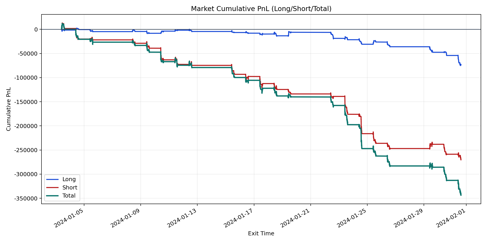
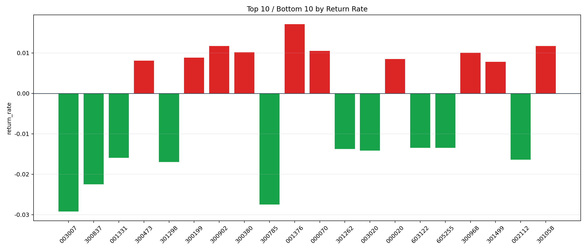

| repo_root | /home/haoranyou/data/output/alpha0.4_1w_5s_3ticks |
|---|---|
| period_months | 1 |
| period_label | 2024-01-03_to_2024-01-31 |
| start_time | 2024-01-03 09:40:06 |
| end_time | 2024-01-31 14:52:47 |
| n_trades | 53231 |
| n_symbols | 2039 |
| total_pnl | -343615.76885 |
| long_total_pnl | -73294.2393000001 |
| short_total_pnl | -270321.52954999986 |
| total_entry_notional | 493966261.0 |
| long_entry_notional | 128306436.0 |
| short_entry_notional | 365659825.0 |
| total_return_rate | -0.0006956259890187115 |
| long_return_rate | -0.000571243669335497 |
| short_return_rate | -0.0007392705215838242 |
| top_symbols_by_return | ["001376", "300902", "301058", "000070", "300380", "300968", "300199", "000020", "300473", "301499"] |
| bottom_symbols_by_return | ["003007", "300785", "300837", "301298", "002112", "001331", "003020", "301262", "605255", "603122"] |

